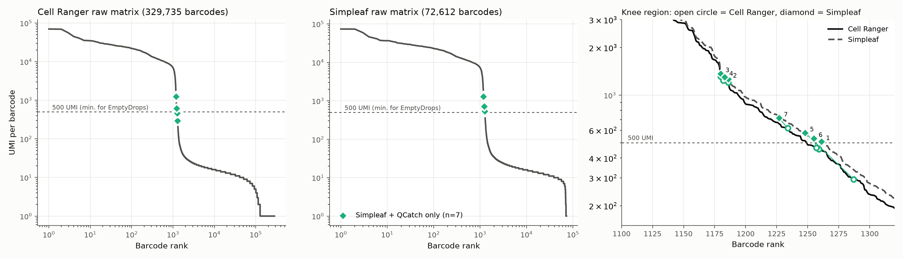
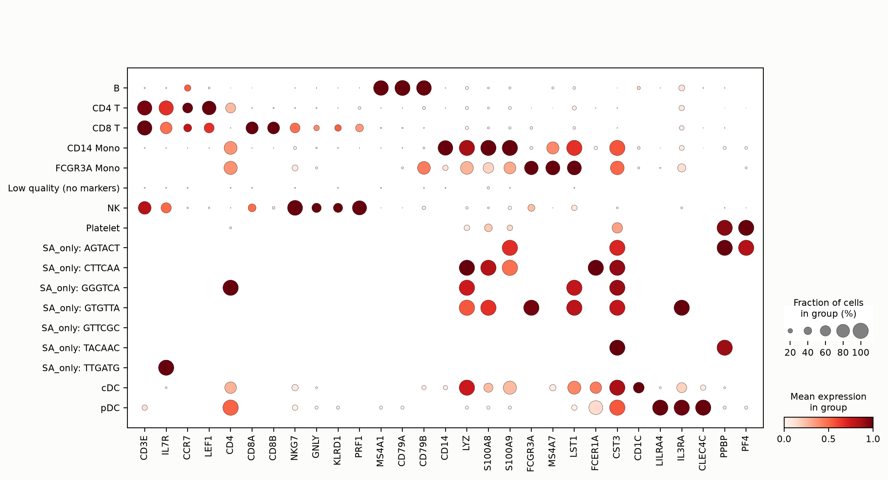
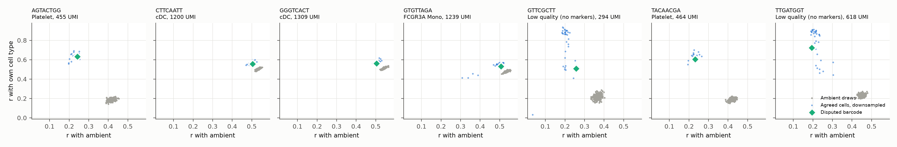
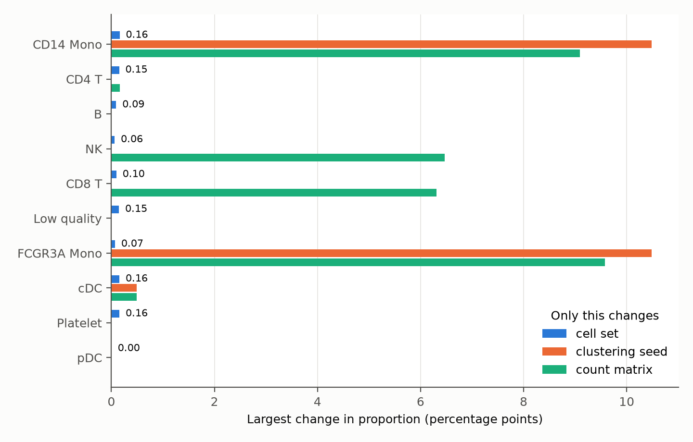
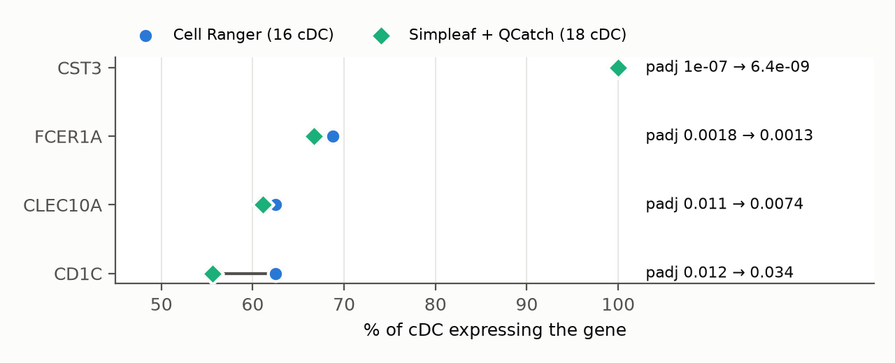

scRNA-seq：Cell Ranger 与 Simpleaf 路线的 barcode 分歧
为什么做这个
Nextflow 管理并记录分析过程，nf-core/scrnaseq 提供单细胞RNA的多条标准化处理路线。我想知道：同一批测序数据，为什么不同路线保留的细胞不完全相同？ 多出的 barcode 是真实细胞、背景 RNA，还是低质量液滴？它们会不会改变生物学结论？
方法
数据为 10x 公开的 PBMC 1k v3，流程为 nf-core/scrnaseq 4.2.0。两边使用同一批 FASTQ、GRCh38-2024-A 参考：Cell Ranger 用预建索引，Simpleaf 用包内 FASTA/GTF 建索引。
版本为 Cell Ranger 10.0.0、Simpleaf 0.19.5、QCatch 0.2.12。 这里比较的是 Cell Ranger 与 Simpleaf＋QCatch：Simpleaf 负责计数，QCatch 负责后续细胞识别。
上游在 AWS r6i.4xlarge（16 vCPU、128 GiB）运行，采用 CloudFormation 自动安装、分析、上传结果后自动终止实例。成功的一次全程 84 分钟；账单约 $2.05，含 3 次失败尝试，成功的那次约 $1.41。本样本的下游比较在 8 GB Mac 个人电脑上完成。
1. 到底差了哪些 barcode？
先比较三个 barcode 集合：共同保留、仅 Cell Ranger、仅 Simpleaf＋QCatch。
# 从两份筛选结果读取并统一 barcode 后缀
shared = cr_cells & sa_cells
cr_only = cr_cells - sa_cells
sa_only = sa_cells - cr_cells
print(len(shared), len(cr_only), len(sa_only))
# 1221 0 7
print(len(shared) / len(cr_cells | sa_cells))
# 0.9943：交集 / 并集这 7 个 barcode 都集中在细胞与背景的过渡区域。

横轴为 UMI 排名，纵轴为 UMI 数。右图空心圆为 Cell Ranger，菱形为 Simpleaf；连线对应同一 barcode。500 UMI 是本次实现的检验门槛，不是所有 EmptyDrops 分析的固定值。
按交集／并集计算，细胞集合一致率为 99.4%。共同细胞中，每个细胞总 UMI 的 Spearman 相关系数为 0.9997，Simpleaf 平均计数约高 5%。整体高度一致，但小差异能改变边界 barcode 的去留。
还要注意：图中的两份“原始矩阵”分别包含 329,735 和 72,612 个 barcode。它们的上游保留范围不同，不能当成完全相同的液滴全集。
2. 多出的 7 个像真实细胞吗？
| 编号 | 初步判断 | UMI：CR → SA | 检出基因数 | 线粒体比例 |
|---|---|---|---|---|
| 1 | 血小板样：PPBP、PF4 | 455 → 508 | 178 | 6% |
| 6 | 血小板样：PPBP | 464 → 532 | 172 | 18% |
| 2 | cDC 样：FCER1A、CST3 | 1,200 → 1,262 | 753 | 5% |
| 3 | 单核／DC 样：LYZ、CST3 | 1,309 → 1,366 | 815 | 7% |
| 4 | FCGR3A 单核样 | 1,239 → 1,298 | 802 | 3% |
| 5 | 低质量，无明确 marker | 294 → 577 | 121 | 52% |
| 7 | 低质量，无明确 marker | 618 → 716 | 67 | 90% |

点大小为检出比例，颜色为相对表达。SA_only 每行仅一个 barcode，标签为初步判断。
1、6 号有血小板 marker。低 UMI 不等于空液滴：血小板本身 RNA 就少。 5、7 号线粒体比例很高，应标为低质量候选，而非直接认定“濒死”。
低深度会影响表达相关性，因此我设置了同深度对照：下采样的同类细胞，以及环境 RNA 模拟的空液滴。

横轴为与环境 RNA 的相关性，纵轴为与候选细胞类型的相关性。蓝：下采样细胞；灰：模拟空液滴；绿：差异 barcode。
1、6 号更接近血小板对照；7 号远离模拟空液滴，5 号介于两者之间，两者都不代表质量合格。2、3、4 号的两类对照区分较弱：环境 RNA 与单核／DC 表达谱相似，相关性不足以裁定它们是不是细胞。
3. 是细胞识别算法不同，还是输入计数不同？
我用同一套 QCatch 代码和参数，以 OrdMag＋EmptyDrops 框架重新识别两份矩阵。
# QCatch 内部接口节选；m 为 CountMatrix，cc 为细胞识别模块。
# 导入、版本及矩阵转换见 analysis/，不是独立运行脚本。
initial = cc.initial_filtering_OrdMag(m, "10X_3p_v3", None)
res = cc.find_nonambient_barcodes(m, initial, "10X_3p_v3", None)
called = {b.decode() for b in initial} | set(res.eval_bcs[res.is_nonambient])Cell Ranger 矩阵仍得到 1,221 个，Simpleaf 矩阵仍得到 1,228 个，与原结果逐个一致。改变随机种子和模拟次数后，本次分歧也未消失。
同一识别实现仍有分歧，接下来应查输入矩阵。 但输入差异包括计数和背景 barcode 范围，不能只归因于某个单一因素。
3 个跨过了 500 UMI 门槛
1、5、6 号在 Cell Ranger 矩阵中低于 500 UMI，未进入这一步的非背景检验；在 Simpleaf 矩阵中则超过门槛。额外计数中，DHFR 占了显著一部分。
| 编号 | 总 UMI 增量 | DHFR 增量 | SA 扣除 DHFR 与一个 chr8 lncRNA 后的 UMI |
|---|---|---|---|
| 1 | 53 | 19 | 485 |
| 6 | 68 | 29 | 495 |
| 5 | 283 | 236 | 341 |
移除这两个基因并重新识别，三个 barcode 都不再被保留。少数基因的计数，足以改变它们能否进入检验。
DHFR 的差异也出现在共同细胞中：Simpleaf 计数为 45,624 UMI（其中 unspliced 45,532），Cell Ranger 为 739。我进一步检查了 Cell Ranger BAM 中的 DHFR 区域：
from collections import Counter
import pysam
# BAM_URL、BAI_URL 为已有 BAM 及索引的临时访问链接。
with pysam.AlignmentFile(BAM_URL, index_filename=BAI_URL) as bam:
mapq = Counter(r.mapping_quality
for r in bam.fetch("chr5", 80626226, 80655002))
print(mapq)
# Counter({1: 4718, 3: 2747, 255: 1519, 0: 4})约 83% 的比对记录 MAPQ 低于 255；这些记录高度集中在一个约 200 bp 的内含子窗口，NH 标签为 2–4，即同一条 read 能比对到基因组 2–4 个位置。
重复序列是 DHFR 异常计数的线索。 两条路线的参考目标和比对／分配规则不同，可能导致这些 reads 的归属不同。未逐条核对 Simpleaf 的 read 分配，因此机制仍是推断，chr8 lncRNA 也不能凭类比认定原因。
注意：Cell Ranger 会根据基因归属调整 MAPQ，不能简化为“只计唯一基因组比对”。MAPQ＝255 不必然代表原始 STAR 比对只有一个位置。10x BAM 标签说明
另外 4 个在统计阈值附近
2、3、4 号都进入检验，但校正后 p 值从 Cell Ranger 的约 0.004 变为 Simpleaf 的约 0.0001，跨过本次 0.001 的阈值。7 号也在阈值附近。这几个未找到明确的单一来源，目前解释到统计阈值层面，而非 read 层面。
最后：这 7 个值得在意吗？
对细胞类型比例：几乎没有影响。 我固定计数、聚类和注释，只改变细胞集。多出的 7 个分属 4 类：血小板 2 个、cDC 2 个、FCGR3A 单核 1 个、低质量 2 个。其余细胞类型的细胞数完全没变，只是分母从 1,221 变成 1,228，比例被稀释，最多 0.16 个百分点。按常见 QC（≥ 200 个基因、线粒体 ≤ 20%）过滤后，差异只剩 3 个细胞：2 个 cDC、1 个 FCGR3A 单核。
这个变化有多小？我在同一流程里只改聚类随机种子，或只换计数矩阵，作为对照：

蓝：只换细胞集；橙：只换聚类随机种子（0–4）；绿：只换计数矩阵（Cell Ranger 或 Simpleaf）。
细胞集带来的变化最多 0.16 个百分点；随机种子或计数矩阵却能让单核、NK／CD8 T 的比例变化 6–10 个百分点。后两项来自我这套简单的聚类／注释方法，不能推广为工具差异。比起这 7 个 barcode，注释对分析设置的敏感性更值得检查。
对小细胞群的 marker：有影响，但有限。 cDC 只有 16 个细胞，多 2 个就是 +12.5%。

CST3、FCER1A、CLEC10A 的结论不变。CD1C 变弱：表达比例从 63% 降到 56%，校正后 p 值从 0.012 升到 0.034，因为新增的 2 个细胞不表达 CD1C。另外，QC 后两边是同一批 15 个血小板，PPBP 的 marker 排名却从第 13 变为第 1，因为前列基因分数接近。看 marker，要看表达比例、效应大小和统计证据，不能只看排名。
结论
同一批 FASTQ，Cell Ranger 保留 1,221 个细胞，Simpleaf＋QCatch 保留 1,228 个，前者全部包含在后者中。我追查了多出的 7 个 barcode：3 个因额外计数跨过 UMI 门槛，DHFR 内含子重复序列是其中的重要线索；另外 4 个处于统计阈值附近。只改变细胞集时，细胞类型比例最多变化 0.16 个百分点。这 7 个对整体细胞类型比例影响很小，但少数基因与固定阈值足以改变去留。两次比较仅使用了一份 PBMC 样本；两种流程在其他数据中是否同样接近，还需要进一步验证。
复现
- AWS 模板：scrnaseq-comparison.yaml。